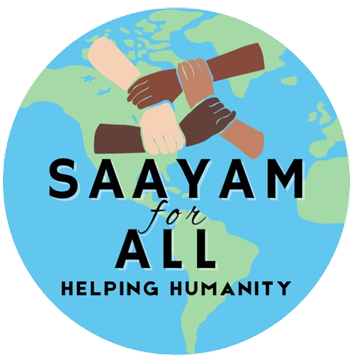
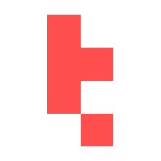

find order in the mess
Uncertainty isn’t an obstacle — it’s where the real work begins. I lean into ambiguity, trust the process, and let clarity emerge through iteration rather than wait for it to arrive.
I specialize in creating clean, user-friendly digital experiences by blending creativity with functionality. With a strong background in interactive design, I focus on crafting designs that not only look great but also provide smooth and engaging user interactions, helping ideas come to life seamlessly.
I see design as a powerful strategic tool to solve complex business challenges and create lasting value. I believe designers carry a responsibility not just towards their work, but also towards the people they design for.
Uncertainty isn’t an obstacle — it’s where the real work begins. I lean into ambiguity, trust the process, and let clarity emerge through iteration rather than wait for it to arrive.
Good ideas don’t live only on screens. Fashion runways, street signs, film frames — everything is a source. I stay curious beyond the interface and let the world feed the work.
The obvious answer is rarely the right one. I push past the first layer — asking why systems break, how people actually think — and design from that deeper understanding rather than from assumptions.
I don’t hand off and walk away. Whether it’s shaping a PRD, pairing with engineers, or pushing pixels at midnight — I treat the outcome as mine and do whatever the problem needs.
Every element should earn its place. I strip away decoration until what remains is purely purposeful — because the most powerful design is the one that gets out of the user’s way.
From enterprise AI platforms to design systems and research-led product work — a growing journey of turning complex problems into clear user experiences.


Open to full-time roles, freelance projects, and collaborations.
achyutkhanpara7@gmail.com